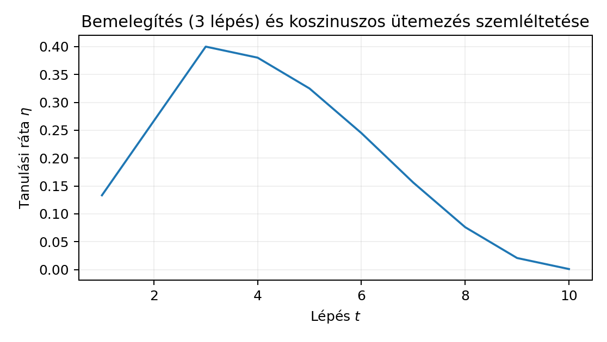

A 21.1. Inicializálás és varianciaterjedés egységben az inicializálás skálaviszonyait vezettük le; ott a frissítés nagyságát még szabadon hagytuk. Itt a learning rate (tanulási ráta, LR), az lépésméret kérdését vizsgáljuk: milyen intervallumban stabil, hogyan változtassuk a tanítás során ütemezetten, és hogyan rögzítsük reprodukálhatóan. Induló becslés: ha a cél és , akkor a gradiens . Mekkora választásnál vált előjelet a frissítés, és melyik tartományban divergál? A pontos határokat egy egyszerű kvadratikus kontrollból vezetjük le; ez a lokális görbület és a lépésméret kapcsolatának alapesete lesz.
Legyen a paramétervektor a -edik frissítés után, a paraméterszám. A -edik minibatch indexhalmazát jelöli, a batch-méretet ; így az indexhalmaz, pedig a méret. A batch-átlag loss:
ahol az -edik tanítóminta vesztesége. A teljes gradiensű frissítéshez képest a következő SGD-lépést használjuk:
A gradiens alakja megegyezik alakjával, tehát . Az általában skalár; a 20.2. Finomhangolás és tanulási ráta finomhangolási egységben láttuk, hogy paramétercsoportonként eltérő is lehet. A következő terminusokat külön kell választani:
optimizer.step() hívás.drop_last=False, egy epoch
stepből áll; drop_last=True esetén
.A kettő nem felcserélhető, mert a legtöbb schedule a lépések vagy az epochok függvénye.
A következő állítást kell levezetnünk.
Állítás (kvadratikus lépésméret-korlát). Legyen , valamely -ra, és legyen a frissítés teljes gradiensű, rögzített mellett:
Ekkor:
Levezetés. , így
Az első állítás -ra triviális, az indukciós lépés pedig a fenti egyenlet. A mértani sorozat ( esetén) pontosan akkor tart nullához, ha ; mellett ez ekvivalens azzal, hogy , azaz . A harmadik pont: akkor és csak akkor, ha . ∎
A érték a lokális görbületből származik; többdimenziós, nem-kvadratikus célfüggvény esetén a Hessian legnagyobb sajátértéke játszik hasonló szerepet, de ez utóbbi kapcsolatot itt csak heurisztikus irányelvnek tekintjük (a spektrális eszközöket 3.4. Sajátérték, SVD és spektrális határ vezette be). A fenti állítás maga teljes, a feltételek szerint bizonyított levezetés.
Kézi számpélda. Legyen , tehát , .
Ez a kontroll nem állít semmit a CNN-veszteség felületéről; azt mutatja meg, hogyan számolható ki a stabilitási tartomány egy explicit görbületű feladaton.
A három tartományt érdemes külön tartani. Ha , a szorzó pozitív és egynél kisebb, a sorozat monoton csökken. Ha , a szorzó negatív, de abszolút értéke egynél kisebb, ezért a sorozat előjelet vált ugyan, de csillapodóan konvergál (csillapodó oszcilláció). Az határon a szorzó nulla: egy lépésben az optimumba jutunk. Az határon a szorzó : a sorozat előjelet vált, de nagysága nem csökken (állandó amplitúdójú oszcilláció). Az tartományban , ezért a sorozat divergál, mégpedig előjelváltva.
A learning rate schedule (tanulási ráta ütemezése) egy előre rögzített vagy pozitív sorozat a tanítási költségvetésre. Három gyakori családot definiálunk. A továbbiakban schedule alatt ezt a sorozatot, scheduler alatt az ezt megvalósító, állapotot tartó objektumot értjük; a magyar „ütemezés” szó a schedule szinonimája.
Step decay. Rögzített kezdőérték, csillapítási tényező és lépcsőhossz mellett
Epoch-alapú változatban
,
ahol
epoch-hossz. A két változatot át kell számolni: az epoch-alak
lépcsője drop_last=False esetén
,
drop_last=True esetén
lépésnek felel meg.
Cosine annealing. Rögzített össz-lépésszámra
A végpontokban és . A itt lépésindex; epoch-alapú használathoz a lépést epochból kell átszámolni.
Warmup. A fő schedule elé lineáris növekedést iktatunk. Az első lépésben
majd -ra a választott ütem következik. A cél, hogy a nagy kezdeti gradiens ne tegye tönkre a frissen inicializált rétegeket; ez heurisztika, és a szükségességét az adott modellen validációval kell igazolni. A BatchNorm-irodalom a nagyobb LR alkalmazhatóságát empirikus előnyként közli [P07], de a mechanizmus vitatott; a [P08] szerint a hatás inkább az optimalizálási cél simításából, semmint a belső kovariancia-eltolódás csökkentéséből ered; a running state kérdéseit 18.2. Batch normalization train és eval módban tárgyalja.
Kiszámolt mini-példa. , , , . A warmup a lépésekre értéket ad. A cosine-szakasz hosszú, a átindexeléssel; a lépésben , a végpontban .

A vízszintes tengely a lépésszám, a függőleges a tanulási ráta; a három lépéses lineáris bemelegítés után a koszinuszos szakasz 0,4-ről 0,001-re csökken. A képletből számított szemléltetés, nem mért futás.
A könyvtári API-kban (például a PyTorch
torch.optim.lr_scheduler modulja, [D06]) a scheduler
futó állapotot (running state) tart nyilván: az
aktuális epoch/step számlálót, az utolsó érvényes
értéket, a plateau-változatnál a patience-számlálót és a legjobb
validációs metrikát. Ez az állapot a kísérlet része. Ha a checkpointba a
modell- és optimizer-state_dict mellett a
scheduler-state_dict nem kerül be, a visszatöltés után a
schedule nem ott folytatódik, ahol abbamaradt; ez reprodukálhatósági
hibát okoz (vö. 12.1. Tanítás, validáció és
kiértékelési mód–12.2. Checkpoint és
folytathatóság). A mentésnek tehát három state_dict-et és az
aktuális epochot kell tartalmaznia.
Az epoch vs step megkülönböztetés azért lényeges, mert a step-alapú schedule más számú frissítést ad a batch-mérettől függően, míg az epoch-alapú schedule azonos epochszám mellett más LR-pályát és más számítási költséget jelent.
A ReduceLROnPlateau visszacsatolt scheduler: a patience a türelmi idő (hány epochon át vár javulás nélkül), a plateau pedig az az állapot, amikor a rögzített validációs metrika ezen az ablakon belül nem javul. Ha ez bekövetkezik, a scheduler szorzót hajt végre, és a patience-számlálót nullázza. Mivel a validációs halmaz itt közvetlenül befolyásolja a tanítási pályát, a validációs split a modellválasztás része; a végső tesztet érintetlenül kell hagyni (1.3. Adatfelosztás és a megfigyelési egység). Az adaptív ütem előnye, hogy a csökkentés időzítését az adathoz igazítja; ára, hogy a zajos validációs metrika hamis plateau-t is jelezhet.
Előfeltételek. Python 3.12, a lab/
csomag telepítve (cd lab && uv sync), NumPy 2.3.5
és torch 2.14.1 (CPU). A lock fájl (lab/uv.lock) ezeket a
verziókat telepíti; a fejezetben közölt mért kimenetek a könyv ellenőrző
környezetéből származnak (Python 3.12.3, NumPy 2.5.4, pandas 3.1.0,
torch 2.15.0+cpu). A két környezet a laborokban ugyanazt a kimenetet
adta; eltérés esetén az utolsó jegyek különbözhetnek (loss kb.
,
accuracy egy megfigyelési egységnyi). Szükséges fájlok: a GlyphLab
lab/data/ mappája (images.npy,
labels.npy, metadata.csv). A futtatás a
szakaszban megadott szkripttel történik; várható futásidő CPU-n néhány
perc, a tényleges időt a futás naplózza.
Protokoll. Kérdés: konstans
vagy warmup+cosine ad-e alacsonyabb legjobb validációs loss-t a
GlyphLabon? Hipotézis: a cosine az utolsó szakaszban csökkentett LR-rel
simábban ér be a minimumba. Adat: lab/data/ a függelék A. A GlyphLab adatkészlet szakaszában leírt
GlyphLab-szerződés szerint; a GlyphLab 360 képe 24×24-es, egycsatornás,
három osztállyal; a train/val splitet a metadata.csv adja,
a scene-szintű csoportosítást az 5.4. Függő képek,
seedek és resampling egységben rögzítettük. Modell: a laborcsomag
1299 paraméteres SmallCNN-je (a
lab/train_cnn.py referencia-modellje): Conv(1→8, 3×3) +
ReLU + MaxPool, Conv(8→16, 3×3) + ReLU, globális átlagolás (GAP),
Linear(16→3); bemenet NCHW
,
kimenet
logit. (Nyers pixeleken dolgozó MLP-vel ugyanez a recept a GlyphLabon
nem tanul: a validációs loss az
szint fölött marad, lásd a 12.4. III. ellenőrző
pont: önállóan tanuló kis háló mérését; a schedule-összevetésnek
csak tanuló modellen van értelme.) Itt NCHW a tensor dimenziósorrendje
([batch, csatorna, magasság, szélesség]); a logit a softmax előtti nyers
kimeneti pontszám. Optimizer: AdamW
lr=1e-2, weight_decay=0.01; a decoupled weight decay [P02]
a csillapítást a gradiens adaptív skálázásától választja le, nem az
LR-től. A PyTorch AdamW lépése
param.mul_(1 - lr*weight_decay), ezért a weight decay
együtthatóját (a weight_decay argumentumot) az LR (és így a
schedule ütemszorzója) is skálázza: a schedule nemcsak az LR-pályát
változtatja, hanem a tényleges csillapítás nagyságát is. Az
összehasonlításban ezt a schedule hatásának részeként kell értelmezni,
nem lehet úgy tekinteni, mintha a weight decay végig azonos lenne. Batch
32, 40 epoch, seed 20261020, CPU float32. Az összehasonlításban azonos
modell, optimizer, batch, epoch és seed mellett csak a schedule típusa
változik; ez az „azonos update-keret”. A cosine ág 3 epoch (24 lépés)
lineáris warmupot használ: a LambdaLR a step
számlálót a már megtett lépések számaként adja át, ezért a
(step+1)/WARMUP_STEPS szorzó a nulladik hívásnál
,
a huszonnegyediknél
,
és innen a cosine-szakasz
-val
csökken; a konstans ág végig
.
A best checkpointot a validációs loss minimuma választja; a végső
tesztet csak a kiválasztás után, egyszer értékeljük. Egyetlen seed
mellett a két schedule különbsége csak erre a futásra érvényes; a
seed-szórás és a páros döntés az F5 protokolljában szerepel.
LambdaLR indexelésével,
valamint az F5 step decay ütemezése
(,
lépcső 15 epoch = 120 lépés). A cosine
-nál
és
-nél
is
,
a
utolsó lépésben
,
tehát a 0-t nem éri el.Futtatási parancs:
cd lab && python n082_schedule_compare.py. A vázlat
a metadata.csv feldolgozásában a 11.3.
Dataset és DataLoader a split után mintáját követi, a batch-elést
azonban kézi randperm-mel végzi, hogy a lépésszám és a
sorrend explicit legyen:
# lab/n082_schedule_compare.py
# CPU-futás rögzített seeddel; a kimenet a lenti, mért blokk.
import math
import numpy as np
import torch
from torch import nn
from torch import optim
SEED = 20261020
device = torch.device("cpu")
X = np.load("data/images.npy") # (360,1,24,24) float32
y = np.load("data/labels.npy") # (360,) int64
# metadata.csv: split oszlop; a pontos string-feldolgozást a 11.3. alfejezet mutatja.
meta = np.genfromtxt("data/metadata.csv", delimiter=",", dtype=None,
names=True, encoding="utf-8")
# A sorrendre nem támaszkodunk: a saját index oszlopa adja a tömbindexet.
if not (len(meta) == len(X) == len(y)):
raise ValueError("a metadata.csv és a tömbök hossza eltér")
idx_all = meta["index"].astype(np.int64)
if not np.array_equal(np.sort(idx_all), np.arange(len(X))):
raise ValueError("a metadata.csv index oszlopa nem permutációja a tömbindexeknek")
split = np.asarray(meta["split"]).astype(str)
train_idx = idx_all[split == "train"]
val_idx = idx_all[split == "val"]
test_idx = idx_all[split == "test"]
B = 32
STEPS_PER_EPOCH = math.ceil(len(train_idx) / B) # 8
assert STEPS_PER_EPOCH == 8
EPOCHS = 40
TOTAL_STEPS = EPOCHS * STEPS_PER_EPOCH
WARMUP_STEPS = 3 * STEPS_PER_EPOCH
def make_model():
# SmallCNN, 1299 paraméter (a lab/train_cnn.py referencia-modellje)
return nn.Sequential(
nn.Conv2d(1, 8, 3, padding=1), nn.ReLU(), nn.MaxPool2d(2),
nn.Conv2d(8, 16, 3, padding=1), nn.ReLU(), nn.AdaptiveAvgPool2d(1),
nn.Flatten(), nn.Linear(16, 3)).to(device)
def make_lr_lambda(kind):
if kind == "const":
return lambda step: 1.0
if kind == "cosine":
def f(step):
if step < WARMUP_STEPS:
return (step + 1) / WARMUP_STEPS
t = step - WARMUP_STEPS
T = TOTAL_STEPS - WARMUP_STEPS
return 0.5 * (1 + math.cos(math.pi * t / T))
return f
raise ValueError(kind)
init_sig = None
def run(kind):
# Mindkét schedule azonos inicializálást és shuffle-sorrendet kap.
global init_sig
torch.manual_seed(SEED)
model = make_model()
sig = float(model[0].weight.detach().double().sum())
if init_sig is None:
init_sig = sig
assert sig == init_sig, "a két schedule inicializálása eltér"
opt = optim.AdamW(model.parameters(), lr=1e-2, weight_decay=0.01)
sched = optim.lr_scheduler.LambdaLR(opt, make_lr_lambda(kind))
lossf = nn.CrossEntropyLoss()
best_val = math.inf
Xt = torch.from_numpy(X[train_idx])
yt = torch.from_numpy(y[train_idx])
Xv = torch.from_numpy(X[val_idx])
yv = torch.from_numpy(y[val_idx])
for epoch in range(EPOCHS):
model.train()
perm = torch.randperm(len(yt))
train_sum = 0.0
for i in range(0, len(yt), B):
xb = Xt[perm[i:i+B]]
yb = yt[perm[i:i+B]]
opt.zero_grad()
loss = lossf(model(xb), yb)
loss.backward()
opt.step()
sched.step()
train_sum += loss.item() * len(yb)
model.eval()
with torch.no_grad():
val_loss = lossf(model(Xv), yv).item()
if epoch + 1 in (1, 20, EPOCHS):
print(f"{kind:6s} epoch {epoch + 1:2d}: train_loss={train_sum / len(yt):.4f} "
f"val_loss={val_loss:.4f}")
if val_loss < best_val:
best_val = val_loss
torch.save({"model": model.state_dict(), "opt": opt.state_dict(),
"sched": sched.state_dict(), "epoch": epoch},
f"best_{kind}.pt")
return best_val
const_best = run("const")
cosine_best = run("cosine")
assert math.isfinite(const_best) and math.isfinite(cosine_best)
print("const best_val_loss:", const_best)
print("cosine best_val_loss:", cosine_best)
def test_eval(kind):
ckpt = torch.load(f"best_{kind}.pt", weights_only=True)
model = make_model()
model.load_state_dict(ckpt["model"])
model.eval()
xe = torch.from_numpy(X[test_idx])
ye = torch.from_numpy(y[test_idx])
with torch.no_grad():
logits = model(xe)
loss = nn.functional.cross_entropy(logits, ye).item()
acc = (logits.argmax(1) == ye).float().mean().item()
return loss, acc
for kind in ("const", "cosine"):
test_loss, test_acc = test_eval(kind)
print(f"{kind:6s} test_loss: {test_loss:.6f} test_acc: {test_acc:.4f}")A kimenet ezen a környezeten mért érték (Python 3.12, NumPy 2.3.5,
torch 2.14.1, CPU float32, OMP_NUM_THREADS=1, seed
20261020; más szálszámmal az utolsó jegyek eltérhetnek). A kód
assert-tel ellenőrzi a lépésszámot és a két futás azonos
inicializálását; a torch.manual_seed(SEED) mindkét
run hívás elején visszaáll, ezért a modell inicializálása
és a randperm-sorrend is azonos:
const epoch 1: train_loss=1.1132 val_loss=1.1030
const epoch 20: train_loss=0.0306 val_loss=0.0257
const epoch 40: train_loss=0.0029 val_loss=0.0037
cosine epoch 1: train_loss=1.1176 val_loss=1.1066
cosine epoch 20: train_loss=0.3873 val_loss=0.3565
cosine epoch 40: train_loss=0.0850 val_loss=0.0891
const best_val_loss: 0.0033617732115089893
cosine best_val_loss: 0.0890515074133873
const test_loss: 0.004020 test_acc: 1.0000
cosine test_loss: 0.094029 test_acc: 1.0000Értelmezés: mindkét ág tanul; az első epoch után a loss még az
szint körül van, a 40. epochra mindkét ág validációs lossa messze
alatta. A konstans ág legjobb validációs lossa
()
kisebb, mint a warmup+cosine águé
(),
a teszt-pontosság mindkettőnél
.
A protokoll hipotézisét ez a futás tehát nem támasztja alá, és az ok
számolható: a warmup és a cosine-lecsengés miatt a cosine ág átlagos
rátaszorzója a 320 lépésen kb.
,
így ugyanannyi lépés alatt összesen kb. fele akkora utat tesz meg; ezen
a rövid, könnyű feladaton a konstans
még nem instabil, ezért a nagyobb összes lépés nyer. Egyetlen seedből ez
sem bizonyít általános schedule-előnyt; a tesztet csak a validációs
kiválasztás után, egyszer értékeltük. A best_val_loss
összehasonlítása ráadásul ugyanazon a validációs halmazon történik,
amelyen a checkpointot kiválasztottuk, ezért a két minimum
összehasonlítása optimista torzítást hordoz; a schedule-döntéshez három
seedes, páros protokoll kell. A labor célja a szerződéses kivitelezés,
nem egy előre megadott győztes.
Az F5 kísérlettervezési feladat kötelező sablonja. A válaszban adja meg a hipotézist; a független és a függő változót; a kontrollt vagy baseline-t; a modellarchitektúrát, az optimalizálót, a tanulási rátát és az epochszámot; a seedek számát és konkrét értékét; a metrikát és a megfigyelési egységet; az előre rögzített, számmal megfogalmazott döntési szabályt és a statisztikai próbát; valamint az erőforráskeretet. Ha a feladat nem tanít modellt, a tanítási recept helyett az adott eljárás kontrollját, döntési szabályát és erőforrását kell kitölteni.
F1 (fogalmi, nehézség 1). Definiálja a step és az
epoch közötti különbséget, és adja meg a kapcsolatukat
drop_last=True esetén. Miért nem elegendő azt közölni, hogy
„50 epochig tanítottuk a modellt”, ha valaki reprodukálni akarja a
schedule-t?
F2 (levezetési, nehézség 2). Tekintse az függvényt, kezdőpontot és az konstans lépésű gradiensmódszert. (a) Adja meg zárt alakját. (b) Számolja ki értékét. (c) Milyen intervallumban konvergál a módszer? (d) Ellenőrizze, hogy esetén .
F3 (implementációs, nehézség 2). Írjon
Python-függvényt
cosine_lr(step, T, eta_max, eta_min, warmup=0) néven, amely
a fenti cosine-képletet valósítja meg, warmup>0 esetén a
tartományban lineáris növekedéssel. Regressziós teszt:
,
,
;
a végpontokra step=0 ad
értéket, step=T ad
értéket. A relatív tűrés
.
Szélsőeset: warmup=0 ne osszon nullával.
F4 (hibakeresési, nehézség 2). Egy kolléga a
checkpointba csak model.state_dict() és
opt.state_dict() objektumokat ment, a scheduler
state_dict-jét nem, majd a visszatöltés után a
ReduceLROnPlateau patience-számlálóját újraindulni észlelte. Adja meg a
hiba okát, következményét és a javított mentés/betöltés kódját.
F5 (kísérlettervezési/transzfer, nehézség 3). Tervezzen kis CPU-kísérletet a GlyphLabon, amely a step decay (, lépcső 15 epoch) és a cosine annealing validációs lossát hasonlítja össze. Adja meg: megfigyelési egység, split, baseline, változó tényező, metrika, keresési keret és seed. Indokolja, miért nem vonható le általános következtetés egyetlen seedből, és milyen ismétlést tenne hozzá.
F1. A step egy optimizer-frissítés, az epoch az
összes tanítóminta egyszeri végighaladása. drop_last=True
esetén egy epoch
stepet tartalmaz, mert az utolsó,
-nél
rövidebb batch kimarad. Az „50 epoch” önmagában nem határozza meg a
frissítések számát: a GlyphLab 240 tanítómintája mellett
esetén
step/epoch, 50 epoch = 350 lépés;
esetén
,
50 epoch = 150 lépés. A step-alapú schedule tehát ugyanannyi epoch alatt
eltérő LR-pályát jár be; a reprodukcióhoz a batch-méretet, a
drop_last értéket és a schedule típusát is meg kell
adni.
F2. Itt , tehát , és
F3. A függvény:
import math
def cosine_lr(step, T, eta_max, eta_min, warmup=0):
if step < warmup:
return eta_max * step / warmup if warmup > 0 else eta_max
t = step - warmup
T_eff = T - warmup
if T_eff <= 0:
raise ValueError("warmup < T szükséges")
return eta_min + 0.5 * (eta_max - eta_min) * (1 + math.cos(math.pi * t / T_eff))Ellenőrzés: cosine_lr(0, 100, 0.1, 1e-4) a
warmup=0 ág miatt a cosine-szakaszba lép,
,
,
az eredmény
.
cosine_lr(100, 100, ...) esetén
,
,
az eredmény
.
A lebegőpontos kerekítés a
relatív tűrésen belül van. A warmup=T eset kizárt a
T_eff<=0 ellenőrzéssel. A warmup>0 ágban
a step a frissítések száma: a step=0 a kezdő
állapot, ezért ad nullát; az első frissítés step=1-nél
,
a
.
frissítés step=W-nél
.
F4. Ok: a scheduler belső számlálói (epoch,
patience, best metrika, utolsó LR) nem részei a modell vagy az optimizer
state_dict-jének; önálló objektumban élnek. Ugyanez a hiba
minden állapotot tartó schedulerre igaz: LambdaLR/cosine
esetén a last_epoch számláló nullázódik, ezért a
visszatöltés után a schedule a pálya elejéről indul újra, és a
konstruktor az optimizer aktuális LR-jeiből képzi a
base_lrs értéket; az első step() így a kezdeti
LR-t állítja be, nem a folytatásét. Következmény: visszatöltéskor a
scheduler új példánya nulla patience-számlálóval indul, tehát a
plateau-várás elölről kezdődik, és a folytatás LR-pályája eltér a
megszakított futásétól. Javítás:
torch.save({"model": model.state_dict(), "opt": opt.state_dict(),
"sched": sched.state_dict(), "epoch": epoch}, "ckpt.pt")
ckpt = torch.load("ckpt.pt", weights_only=True)
model.load_state_dict(ckpt["model"])
opt.load_state_dict(ckpt["opt"])
sched.load_state_dict(ckpt["sched"])Ellenőrzés: a mentés utáni sched.get_last_lr() értékét
naplózza; a visszatöltés után ugyanazt kell visszaadnia.
F5. Egy lehetséges terv. Megfigyelési egység: egy
teljes tanítási futás a rögzített seeddel. Split: a GlyphLab
scene-szintű train/validációs/test felosztása; a validáció a best
checkpoint kiválasztására szolgál, a teszt csak a végén fut. Baseline: a
step decay
(,
,
lépcső 15 epoch). Változó tényező: a schedule típusa (step decay versus
warmup+cosine), minden más azonos. Metrika: legjobb validációs loss;
záró teszt-accuracy a kiválasztott checkpointra. A keresési
keret itt a rögzített kísérleti beállítások halmaza: a fenti
hyperparaméterek, a split, a modell és az értékelési szabály; a kereten
belül csak a schedule típusa változik. A konkrét beállítások: a
laborbeli SmallCNN, AdamW
,
40 epoch és 32-es batch (8 lépés/epoch, 320 lépés), a step decay 15
epochos lépcsője (a 15. és a 30. epoch után:
;
a lépcső rövidebb a teljes tanításnál, különben a step decay ág végig
konstans lenne), három seed (20261020, 20261021, 20261022). Egy seed nem
általánosít, mert a súlyinicializálás és a minibatch sorrend
realizációja eltérő pályát ad. Ismétlés: a három seedet párosítjuk a két
schedule között, átlagot és seed-szórást adunk, a páros különbségekre
bootstrap CI-t számolunk; ha a 95%-os CI tartalmazza a nullát, nem
állítunk különbséget. Várt eredmény: előre nem tudható; a labor egyetlen
seedes futásában a konstans ráta a cosine-nál kisebb validációs lossot
adott, ezért a döntést nem a pontbecslés, hanem a páros CI adja; a
tesztet csak leíró értékelésre használjuk. A következtetést a GlyphLabra
és a használt modellcsaládra korlátozzuk.
Rögzített terv (a fenti megoldás számszerű kiegészítése).
Hipotézis: a warmup+cosine ütemezés alacsonyabb legjobb
validációs lossot ad, mint a step decay
(,
lépcső 15 epoch). Architektúra és erőforrás: a
laborbeli SmallCNN (1299 paraméter), AdamW
,
weight_decay=0.01, 40 epoch és 32-es batch (320 lépés); a
három seed
–;
a döntési szabály a páros seed-különbségek 95%-os bootstrap CI-je,
legalább 0,01 validációs loss-különbséggel. Erőforrás: CPU,
float32, két ág × három seed = hat futás, néhány perc; a
futásidőt a napló rögzíti.
„A 40 epoch ugyanannyi számítást végez, mint bármely más 40 epochos
futás.” Ez hibás, és a hiba nem a schedule típusáról szól, hanem a
batch-méret és a step-szám kapcsolatáról. A GlyphLab 240 tanítóképéből
drop_last=False mellett
esetén 8 batch képződik,
esetén 4; 40 epoch az elsőnél 320, a másodiknál 160 frissítést jelent. A
forward/backward hívások száma és a számítási költség tehát a
batch-mérettől függ; a step-alapú step decay ugyanazon epochszám alatt
más számú lépcsőt hajt végre a két esetben. Az epoch önmagában sem a
költséget, sem a schedule pályáját nem határozza meg.
Önellenőrző kérdések. (1) Mi a intervallum szerepe a kvadratikus példában? (2) Mely állapotokat kell a checkpointba menteni a scheduler folytatásához? (3) A cosine-képlet és végpontjaiban milyen értéket ad?
Rövid válaszok. (1) Ez a stabilitási tartomány: ezen
belül
,
tehát a sorozat konvergál;
monoton,
csillapodó oszcilláció. (2) A modell, az optimizer és a scheduler
state_dict-jét, valamint az aktuális epochot (és a legjobb
validációs metrikát, ha a checkpointválasztás része). (3)
és
.
Visszautalás 21.1. Inicializálás és varianciaterjedés. Az inicializálás varianciaskálája és az LR nem független: a túl nagy kezdeti aktivációskálából adódó nagy gradiens ugyanazt a stabilitási határt feszíti, mint a túl nagy . A két beállítást együtt kell diagnosztizálni.
Visszautalás 20.2. Finomhangolás és tanulási ráta. A finomhangolásnál a paramétercsoportonkénti LR ugyanazt a frissítési szabályt használja, csak csoportonként más; a scheduler ilyenkor minden csoportra azonos ütemben skáláz.
Visszautalás 17.2. AlexNet és a kísérleti kontextus. Az AlexNet-kísérlet tanulsága, hogy a nagy hálózatok tanítási eljárása (LR, momentum, dropout, augmentáció) szétválaszthatatlan az elért teszteredmény kontextusától; a 17.2. AlexNet és a kísérleti kontextus alfejezetben közölt 15,3% top-5 hiba nem a schedule önmagában való dicsérete.
A learning rate a gradiensfrissítés skálája; a korlát mutatja, hogy a lokális görbület felső határt szab a stabil lépésnek. A step decay, a cosine annealing és a warmup előre rögzített ütemek, a ReduceLROnPlateau ezzel szemben validációs visszajelzést használ. A scheduler állapota a reprodukálható tanítás része, ezért a checkpointnak a model, optimizer és scheduler state_dict mellett az epochot is tartalmaznia kell. Az epoch és a step különböző költség- és pályafogalom; azonos epochszám nem jelent azonos számítást. A labor két schedule kis CPU-futását azonos modell, optimizer, seed és split mellett hasonlítja össze.
A 21.3. Dropout, súlyregularizálás és augmentáció egység a dropout, a súlyregularizálás és az augmentáció kérdését tárgyalja. Ezek a regularizáló eszközök a schedule-rel együtt hatnak a validációs pályára, ezért ott azt is vizsgáljuk, hogyan kell őket kísérletileg szétválasztani.